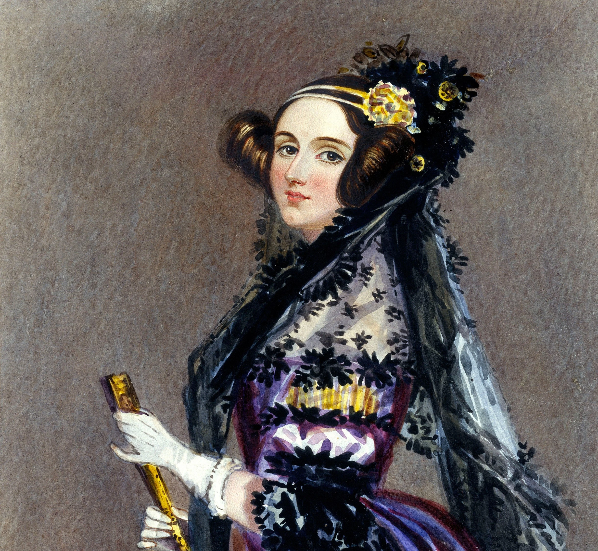

01
Computação • Século XIX

Ada Lovelace
Pioneira da programação
Escreveu um algoritmo para a Máquina Analítica de Charles Babbage e percebeu que máquinas poderiam ir além de cálculos numéricos.
“A máquina analítica não tem pretensão alguma de originar nada. Ela pode fazer qualquer coisa que saibamos ordenar que execute.”